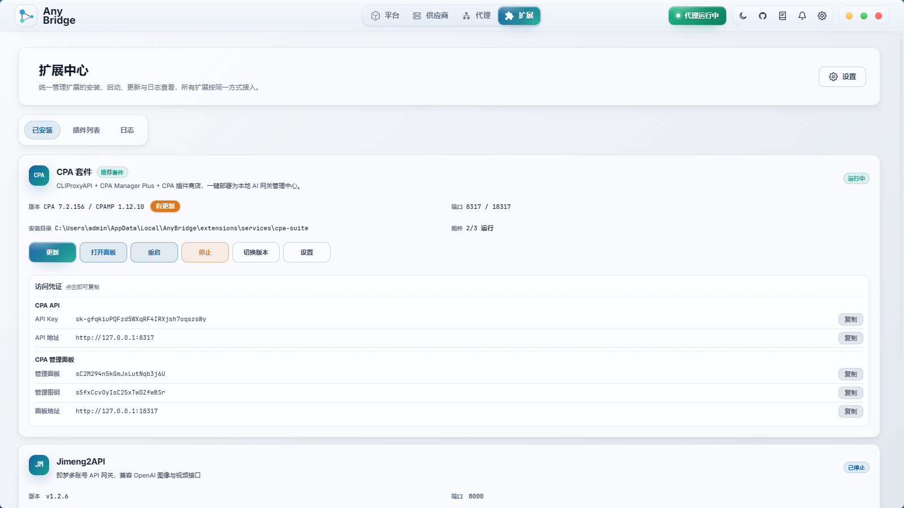
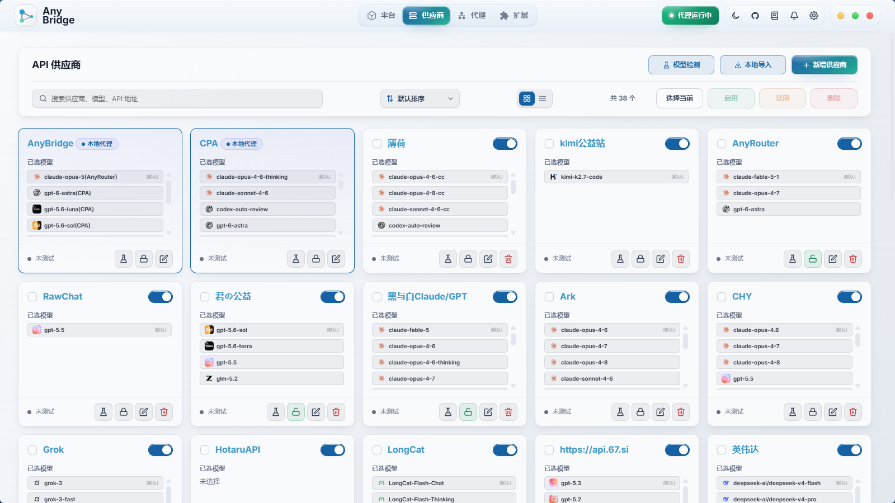
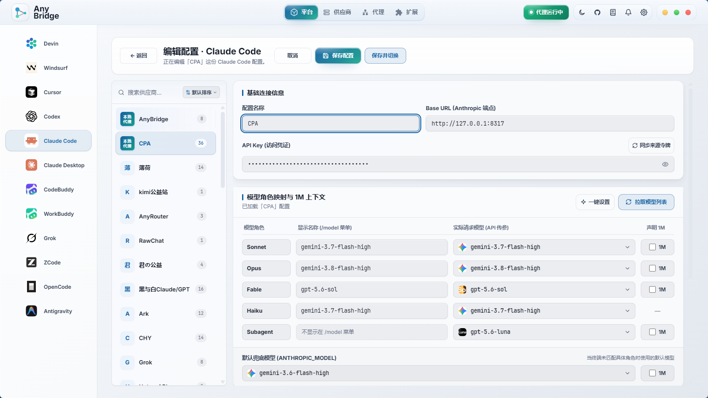
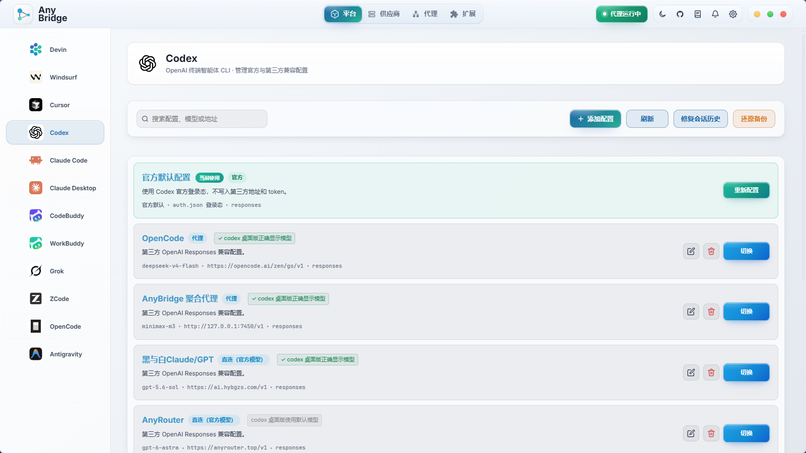

三步开始使用
先安装 AnyBridge，再把你的模型供应商填进去，最后选择要接入的 AI 编程工具。
- 1去发布页下载最新版安装包。Windows 用户一般选择带
Setup.exe的文件。 - 2打开 AnyBridge，添加你的 API Key、接口地址和模型列表。
- 3在平台页选择 Codex、Cursor、Windsurf、Devin 等工具，一键切换到 AnyBridge。
AnyBridge 是本地运行的 BYOK 桥接工作台。它把你的 API Key、模型供应商、本地代理、模型映射和 IDE 配置切换集中到一个桌面控制面里。

不用命令行，不用折腾开发环境。打开发布页，按系统下载对应安装包，安装后在桌面端里添加供应商并切换工具。
先安装 AnyBridge，再把你的模型供应商填进去，最后选择要接入的 AI 编程工具。
Setup.exe 的文件。发布页会放多个系统的安装包。普通用户优先选择安装器，下载后按系统提示安装即可。
先添加供应商和模型，再到平台页选择你正在用的工具，点击切换。需要代理模式的工具按提示重启一次即可。
不强迫所有工具走同一条路。AnyBridge 根据工具特性选择代理、配置写入或标准 API 网关。
适合不直接开放 BYOK 的桌面 IDE，通过本机代理识别并转发聊天请求。
适合原生支持自定义 API 的工具，自动写入正确配置文件，避免手写 JSON。
把不同上游供应商统一暴露成 OpenAI 兼容接口，任何支持自定义 API 的工具都能接入。
/v1/chat/completions看图模型不足、Codex 模型列表受限、多个工具重复配置、代理出错难排查，这些都放进了同一个控制台。
把工具固定的模型槽位映射到你真正想用的模型，也可以统一命名对外暴露的模型 ID。
把截图先交给视觉备用模型分析，再把文字描述交给 DeepSeek、GLM、Qwen 等文本模型继续回答。
通过运行时注入把你配置的模型加入 Codex Desktop 下拉列表，不需要改二进制文件。
内置 Kite 插件入口，适合和 AnyBridge 一起使用，补齐账号、界面和日常增强能力。
主模型失败后按备用链路切换，配合重试策略处理临时网络错误和供应商不可用。
Anthropic、OpenAI、DeepSeek、智谱或自建接口都可以统一管理，不用每个工具重复填密钥。
把 AnyBridge 作为本地接口给更多工具调用，地址就是 http://localhost:7450/v1。
检测证书、路径、配置、Sidecar、端口和供应商连通性，避免隐性失败。
日常使用就是添加供应商、选择模型、切换平台、观察日志和统计。

集中维护 API Key、Base URL、协议格式、模型列表和启用状态。

把供应商模型添加到本地代理列表，配置能力标签、备用模型和命名规则。

面向 Devin / Windsurf 的增强入口，可与 AnyBridge 的模型接入能力配合使用。
普通用户只要知道：桌面端负责配置，本地代理负责转发，上游模型供应商由你自己填写。
添加供应商、选择模型、切换工具、安装证书、查看日志和统计，都在桌面端里完成。
工具发来的聊天请求会进入本机代理，再按你的模型映射发到对应供应商。
可以接 Anthropic、OpenAI、DeepSeek、智谱、MiniMax 或任何兼容接口。
请求统计、错误日志、连通性测试和环境体检会帮你定位到底是哪一层出错。
一般选择发布页里带 Setup.exe 的安装包。下载后双击运行，按安装向导继续即可。
不会。AnyBridge 是本地运行的桥接工具，运行时配置保存在你电脑的应用数据目录里。
不需要。下载安装包后打开桌面端，在界面里添加供应商、选择工具并点击切换即可。
目前覆盖 Windsurf、Devin、Cursor、Codex、Claude Code、OpenCode、CodeBuddy、ZCode 和 WorkBuddy 等工具。